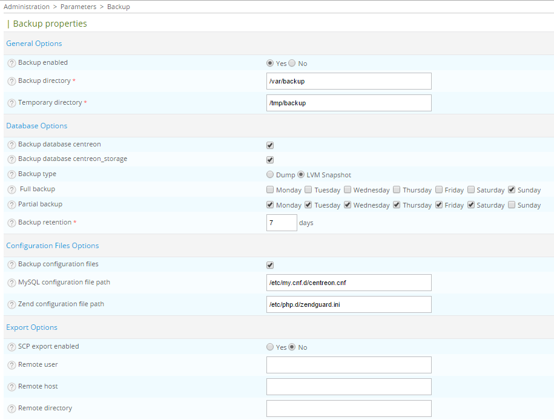

Backup¶
How it works¶
Daily execution¶
The backup script is executed on a daily basis with a cron job located in /etc/cron.d/centreon:
##########################
# Cron for Centreon-Backup
30 3 * * * root /usr/share/centreon/cron/centreon-backup.pl >> /var/log/centreon/centreon-backup.log 2&>1
Each day at 3:30 AM, backup script checks if backup is planned on current day.
Backup types¶
There are two types of backup : database and configuration files.
Database backup¶
Database backup can be processed on two databases : centreon and centreon_storage
There are two kinds of database backup:
- MySQLdump : mysqldump command is used to backup databases. Be careful, mysqldump can take long time on large databases.
- LVM Snapshot : Binary copy of MySQL files is done. You need to have a specific LV for MySQL (i.e. /var/lib/mysql) and 1GB of space in its VG.
Backup format :
- yyyy-mm-dd-centreon.sql.gz
- yyyy-mm-dd-centreon_storage.sql.gz
Configuration files backup¶
All configuration files of central server can be saved : MySQL, Zend, Apache, PHP, SNMP, centreon, centreon-broker)
Backup format :
- yyyy-mm-dd-Monitoring-Engine.tar.gz (centreon-engine configuration files)
- yyyy-mm-dd-Central.tar.gz (other configuration files)
Configuration¶
This part covers the configuration of centreon-backup.
- Go into the menu: Administration ==> Parameters ==> Backup
The following window is displayed:
- Backup enabled Enable/Disable backup
- Backup directory Directory where backup will be stored
- Temporary directory Directory used during backup process
- Backup database centreon Enable backup on centreon database
- Backup database centreon_storage Enable backup on centreon_storage database
- Backup type Type of backup (MySQLdump or LVM snapshot)
- Full backup Period for full backup
- Partial backup Period for partial backup (only available with LVM snapshot backup)
- Backup retention Retention for backups (in days)
- Backup configuration files Enable backup of configuration files
- MySQL configuration file path Path for MySQL configuration file
- Zend configuration file path Path for Zend configuration file
- SCP export enabled Enable SCP export of backups
- Remote user Remote user for SCP export
- Remote host Remote host for SCP export
- Remote directory Remote directory for SCP export
Warning
Temporary directory can not be a folder of Backup directory.
Restore of Centreon central server¶
Restore process is divided in two main steps:
- Re-install the Centreon platform following the installation documentation. Do not forget to upgrade system.
- Restore Centreon-Engines configuration files and Centreon databases
Configurations file restore¶
Before databases restore, you have first to restore configuration files:
# cd /var/backup
# tar -xvf YYYY-MM-DD-central.tar.gz
# cd backup/central/etc/centreon
# cp * /etc/centreon/
Databases restore¶
Once Centreon server reinstalled (same Centreon version), unzip centreon and centreon_storage databases backup:
# mysql
mysql> drop database centreon;
mysql> drop database centreon_storage;
mysql> CREATE database centreon;
mysql> CREATE database centreon_storage;
mysql> GRANT ALL ON centreon.* TO 'centreon'@'<centreon_ip_address>n' IDENTIFIED BY 'password' ;
mysql> GRANT ALL ON centreon_storage.* TO 'centreon'@'<centreon_ip_address>' IDENTIFIED BY 'password' ;
mysql> exit;
# gzip -d YYYY-MM-DD-centreon.sql.gz
# mysql centreon < YYYY-MM-DD-centreon.sql
# gzip -d YYYY-MM-DD-centreon_storage.sql.gz
# mysql centreon_storage < YYYY-MM-DD-centreon_storage.sql
This may take a while due to the size of “centreon_storage” databases.
Note
Password is stored in configuration files previously restored. For example $mysql_passwd field in file “/etc/centreon/conf.pm”.
Note
The default configuration does not define any password for mysql root user. That’s why we can connect to database using only command “mysql”.
SSH keys restore¶
This step is to restore the SSH key linked to user centreon and centreon-engine within a distributed environment. Restoration must be done manually. We must therefore initially extract this archive into a temporary directory and move the files one by one according to their location:
# cd /var/backup
# tar -xvf AAAA-MM-JJ-centreon-engine.tar.gz
# cd backup/ssh
# mkdir -p /var/spool/centreon/.ssh/
# chmod 700 /var/spool/centreon/.ssh/
# cp -p id_rsa /var/spool/centreon/.ssh/
# cp -p id_rsa.pub /var/spool/centreon/.ssh/
Connection test from central to poller:
# su - centreon
# ssh <poller_ip_address>
Answer “Yes” to the ask question. This is about add poller print on the central server.
Note
You have to do this operations only if you work with a distributed environment.
Plugins restore¶
Plugins have been backuped in the archive: “YYYY-MM-DD-centreon-engine.tar.gz.” Restoration must be done manually. We must therefore initially extract this archive into a temporary directory and move the files one by one according to their location.
On each poller, you have to do:
# cd /var/backup
# tar -xvf YYYY-MM-DD-centreon-engine.tar.gz
# cd backup/plugins
# cp -pRf * /usr/lib/nagios/plugins
Init script restore¶
Some checkpoints of Oracle or SAP entail modifying the init script scheduler to add environment variables. If you changed the init script of your scheduler, you will have to restore it. Extract the archive into a temporary directory and move the files according to their location:
# cd /var/backup
# tar -xvf YYYY-MM-DD-centreon-engine.tar.gz
# cd backup
# cp init_d_centengine /etc/init.d/centengine
Monitoring agent restore¶
In case you’re using NRPE or NSCA agents, you have to reinstall and then restore configuration:
# cd /var/backup
# tar -xvf YYYY-MM-DD-centreon-engine.tar.gz
# cd backup/etc
# cp nrpe.cfg /etc/centreon-engine/
# cp nsca.cfg /etc/centreon-engine/
Note
You have to do this only if you’re using the monitoring agents.
Generate Centreon-Engine configuration files within centreon¶
Last step is to generate the Centreon-Engine configuration files within Centreon.
Graphs rebuild¶
Once your monitoring platform is restored and all is doing well, you can rebuild RRD files in order to restore all performance graphs. To rebuild performance graphics, go to the menu Administration -> Options -> Centstorage -> Manage. On this page, you must select all the services and click “Rebuild RRD Database”.
Your server is now restored.